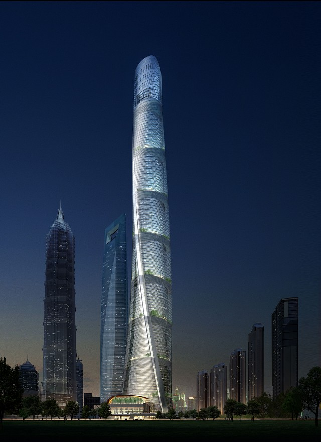
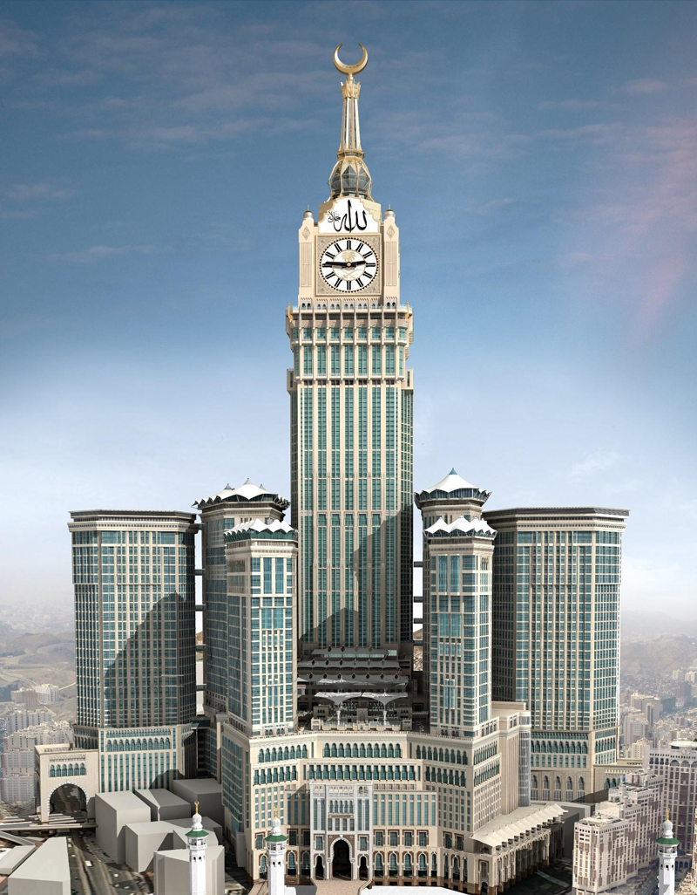

Rascacielos más Altos del Mundo
Juan Ángel Hernández Zaragoza
El Burj Khalifa (Torre Califa) es el edificio más alto del mundo con una altura de 828 metros. En la construcción del edificio han participado más de 12.000 personas de 30 países. Anteriormente fue conocido como Burj Dubai (Torre de Dubái).
Para hacernos una idea de su altura lo mejor es compararlo con el rascacielos más famoso del mundo, el Empire State de Nueva York. Con 381 metros de altura (431 si incluimos su antena), el rascacielos neoyorquino es la mitad que el Burj Khalifa
La construcción del Burj Khalifa comenzó el 21 de septiembre de 2004 y finalizó el 4 de enero de 2010, más de un año después de lo previsto. El rascacielos destaca por tener un gran número de plantas residenciales, algo insólito hasta el momento.
Juan Ángel Hernández Zaragoza

La Torre de Shanghai está organizada en base a nueve edificios cilíndricos apilados uno encima del otro. La capa interior de la fachada de doble piel encierra los edificios apilados, mientras que la fachada exterior genera la envolvente del edificio, que gira en 120 grados mientras se levanta y le da a la Torre su apariencia curva. Los espacios entre las dos capas de la fachada crean nueve jardines elevados. Al igual que las plazas cívicas de las ciudades tradicionales, estos jardines permiten la interacción y la reunión de la comunidad, incluyendo restaurantes, cafés y tiendas, a lo largo de un paisaje exuberante. A través de estos jardines, la torre es, literalmente, envuelta en espacios públicos.
El interior de la torre y sus pieles exteriores son transparentes, estableciendo una conexión visual entre el interior y la ciudad de Shanghai. En la planta baja, espacios comerciales y de eventos, junto con una estación de metro, conectan física y visualmente la torre y la ciudad.
La torre contará con los ascensores más rápidos del mundo, diseñados por Mitsubishi, los que se componen de cabinas de doble altura que viajan a 40 km/hora, en base a tecnologías innovadoras diseñadas específicamente para la torre.
Juan Ángel Hernández Zaragoza

Las Torres de Abraj Al-Bait son un conjunto de edificios que se encuentran ubicados en el centro de la Meca, en Arabia Saudita. Es el edificio más grande que se haya construido en el mundo (en tamaño por masa), el edificio más alto en Arabia Saudita y la cuarta estructura más alta del mundo, por detrás del Burj Khalifa, el Tokyo Skytree y la Torre central de Shanghái.
La torre más alta del proyecto se alza como el edificio más alto de Arabia Saudita y el hotel más alto y grande del mundo, con una altura de 601 metros (1 972 pies). Cuando se acabó se coronó como el segundo edificio más alto del mundo, después del Burj Khalifa de Dubái. La estructura tiene un área de construcción más grande que cualquier otra estructura en el mundo con 1 500 000 m² (16 150 000 pies²) de área construida, la misma que la de la la Terminal 3 en el Aeropuerto Internacional de Dubái, en los Emiratos Árabes Unidos, la cual se encuentra en construcción. También supera a JW Marriott Marquis Hotel Dubai Towers en Dubái como el hotel más alto del mundo.
Además, las Torres Abraj Al-Bait tienen un centro comercial de cuatro plantas y un aparcamiento capaz de albergar más de mil vehículos. Las torres residenciales albergan permanentemente a los residentes, mientras dos helipuertos y un centro de convenciones sirven para acomodar a los viajeros de negocios. En total, más de setenta mil personas pueden ser albergadas en el interior de las torres. El edificio tiene un reloj en cada fachada de la torre. El piso residencial más alto está a 400 metros sobre el suelo, justo debajo del reloj. Tiene un pináculo de 71 metros en el tope del reloj que le da una altura total de 601 metros (1 740 pies), lo que lo convierte en el tercer edificio más alto del mundo, sobrepasando a la torre Taipei 101 en Taiwán, y por detrás de la Torre central de Shanghái y el Burj Khalifa.
El One World Trade Center, conocido anteriormente como la Freedom Tower o Torre de la Libertad, es un rascacielos construido en Lower Manhattan, Nueva York, Estados Unidos por los arquitectos Daniel Libeskind y David Childs. Este edificio, con un costo de más de 3 000 millones de dólares, es el mayor rascacielos del nuevo complejo del World Trade Center, en reemplazo de las antiguas Torres Gemelas, destruidas por los atentados del 11 de septiembre de 2001.
Tiene una altura de 541 metros, siendo la séptima estructura más alta del mundo, después del Burj Khalifa, de 828 metros de altura, Tokyo Skytree de 634 metros, la Torre central de Shanghái de 632 metros, las Torres Abraj Al Bait de 601 metros, la Torre de televisión de Cantón de 600 metros y la Torre CN de 553,33 metros. También es el cuarto edificio más alto del mundo, así como el más alto de los Estados Unidos. La altura del edificio tiene una característica simbólica muy particular, pues sus 541 metros equivalen a 1 776 pies, cifra que resulta ser el año de independencia de los Estados Unidos (4 de julio de 1776). Además, la azotea del edificio está situada a 417 metros de altitud, la altura exacta de las antiguas Torres Gemelas. El 30 de abril de 2012 la torre se alzó oficialmente como el rascacielos más alto de Nueva York a una altura de 387 metros, superando al Edificio Empire State con 381 metros de altura.
Originalmente denominado Freedom Tower (cuya traducción al español sería Torre de la Libertad), el 26 de marzo de 2009, la Autoridad Portuaria de Nueva York y Nueva Jersey hizo público el acuerdo con el que será el primer inquilino de la Torre, Vantone Industrial Co., que ocupará seis plantas del edificio, desde los pisos 65 al 71 y comunicó el cambio en el nombre del edificio por ser un nombre más vendible comercialmente.
Juan Ángel Hernández Zaragoza
La torre alberga 208 720 m² de oficinas, 74 260 m² de residencias, y 45 924 m² del programa de hoteles.
CTF Finance Centre es un rascacielos en construcción en Guangzhou, China, cuya estructura ya está finalizada. Es el segundo del complejo de dos rascacielos con vistas al río Perla en Guangzhou. Su altura final es de 530 metros (1 740 ft), con 111 pisos. Se espera que esté terminado en 2016. Chow Tai Fook Center, de 398 000 m² de uso mixto, está situado al otro lado de la torre Guangzhou International Finance Center en el distrito de Tianhe, en Guangzhou.
La fachada de la torre está diseñada para enfatizar su verticalidad. Dicha fachada, que es una combinación de vidrio, madera y piedra, se envuelve en la torre y ofrece amplias terrazas de restaurantes y cafés. Una cubierta de techo de gran tamaño sobre el área del hotel sirve como un área para banquetes al aire libre.
El edificio emplea una serie de herramientas de eficiencia energética con el fin de reducir su huella ambiental. Estos incluyen el uso de enfriadores de alta eficiencia, materiales de fachada con buenas propiedades térmicas, y la recuperación de calor de los condensadores de enfriadores de agua enfriada.
Juan Ángel Hernández Zaragoza